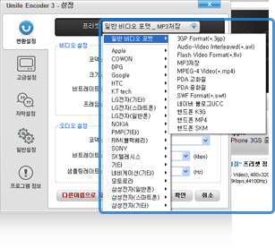
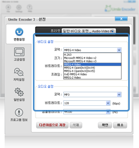
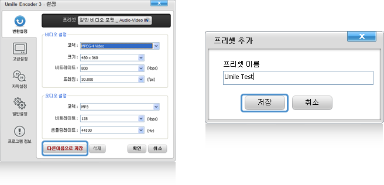

topmenu
Umile Encoder
Korea
English
chinese
japan
TuTorial
Features
Download
Support
Donation
설치하기
인코딩하기
즐겨찾기 관리
나만의 프리셋 만들기
나만의 프리셋 만들기
나만의 프리셋 만들기
유마일 인코더는 다양한 기기의 프리셋을 제공할 뿐만 아니라, 사용자 스스로 원하는 설정값 입력을 통해 나만의 프리셋을 생성할 수 있는 기능 또한 제공합니다.
동영상 파일 포맷 설정
자신이 원하는 동영상의 파일 포맷을 선택합니다.

비디오 & 오디오 설정 변경
프리셋 생성을 위해 자신이 원하는 Video 및 Audio 세팅값을 변경합니다.

새로운 프리셋 저장
세팅값 변경이 완료되면 새로운 프리셋 생성을 위해 다른 이름으로 저장 버튼을 클릭합니다. 그러면, 프리셋 이름을 입력하라는 팝업창이 나타나며, 새로운 이름 입력 후 저장 버튼 클릭을 통해 저장합니다.
